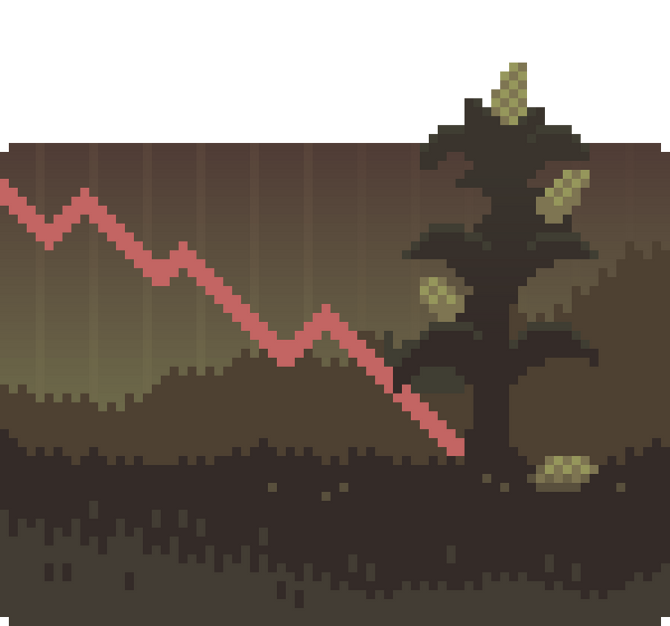
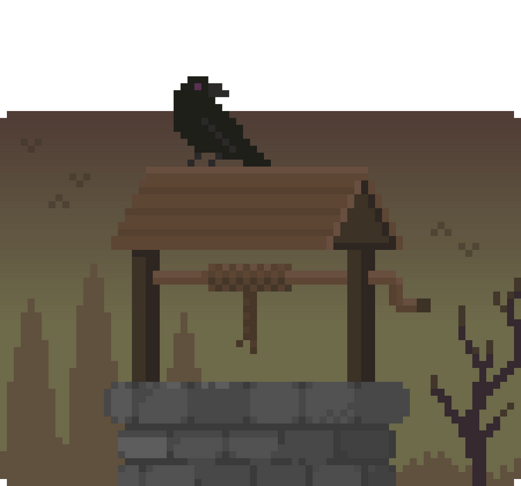
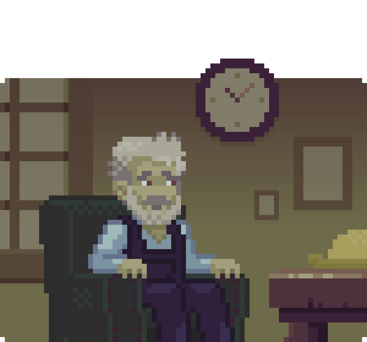
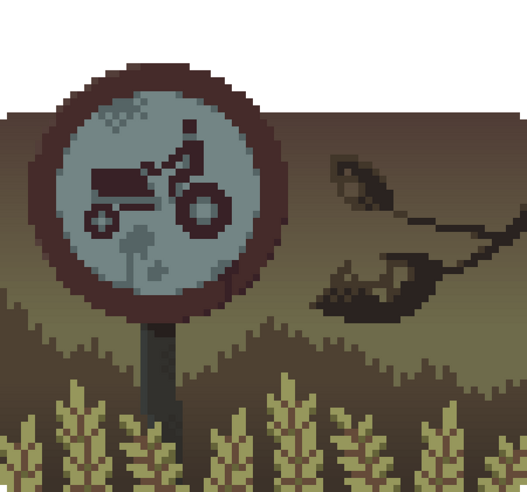
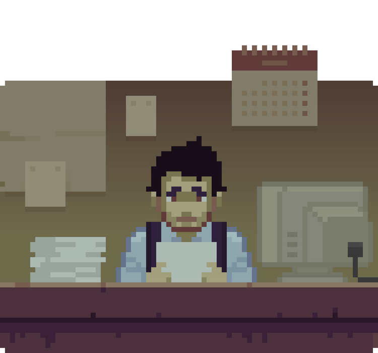
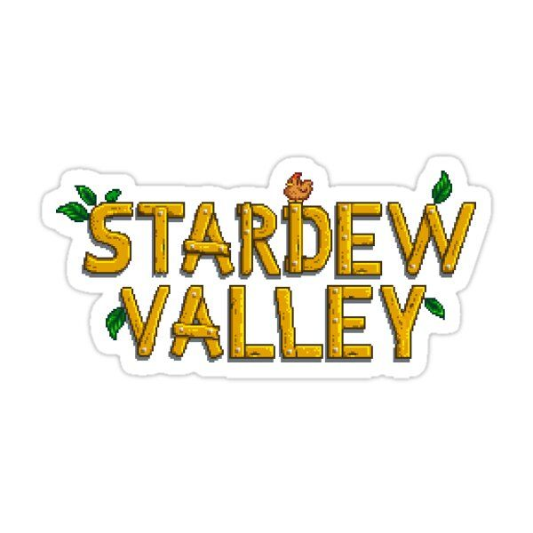
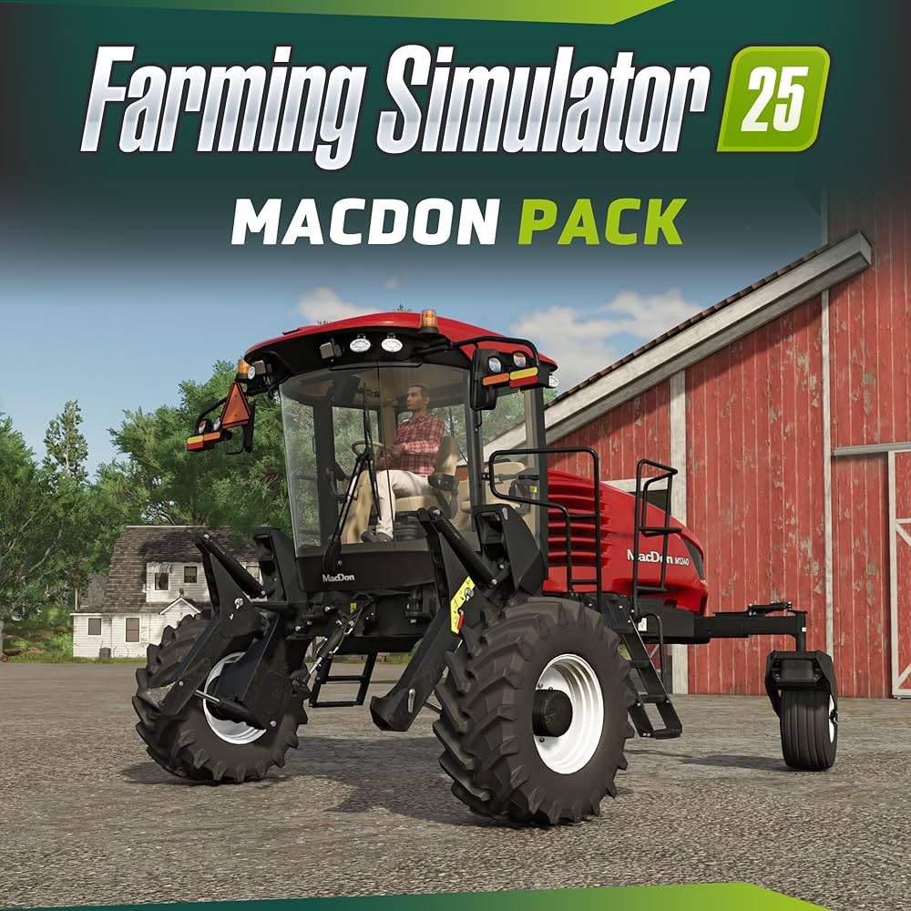
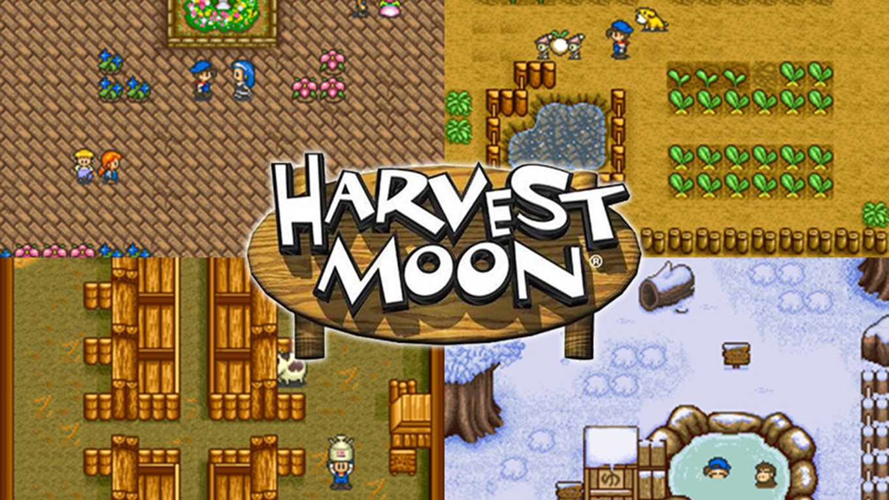

Cultivos en Juego
Una Realidad en «Modo Difícil»
Explorando los Desafíos de la Agricultura
A día de hoy, existen más de 850 videojuegos disponibles basados en la vida en el campo. Todos estos simuladores agrícolas tienen un objetivo: divertirse y relajarse poniéndose en la piel de un agricultor. Sin embargo, la tranquilidad y la diversión están muy alejadas de la realidad de un sector cada vez más preocupado, confuso y agotado.
Principales Desafíos de la Agricultura
-
Precios del mercado: Las fluctuaciones en los precios afectan directamente la rentabilidad.
-
Sequía y acceso al agua: La gestión eficiente del agua es crucial para la supervivencia.
-
Relevo generacional: La falta de jóvenes interesados pone en riesgo la continuidad.
-
Plagas y enfermedades: El control requiere soluciones innovadoras y sostenibles.
-
Normativas y burocracia: Cambios continuos que resultan agotadores para los agricultores.
¿Estás listo para el desafío?
Juegos Relacionados con la Vida en el Campo
Si estás interesado en explorar más sobre la vida agrícola, estos videojuegos pueden ayudarte a entender mejor las tareas y desafíos del sector:
-
Stardew Valley: Un simulador de granja en el que administras cultivos, crías animales y exploras una comunidad rural.
-
Farming Simulator: Una experiencia realista que te permite manejar maquinaria agrícola y gestionar una explotación.
-
Harvest Moon: Una serie clásica en la que cultivas, cuidas animales y formas relaciones en un pequeño pueblo.
-
Agrocalipsis (Disponible en ChatGPT): Experimenta la realidad del sector agrícola en primera persona con una beta de Agrocalipsis. Este juego conversacional te sumerge en la frustración que enfrentan los agricultores, desde la gestión de recursos hasta la toma de decisiones cruciales.

Contáctanos
Formulario de Contacto
Déjanos tus comentarios o preguntas, y te responderemos lo antes posible.